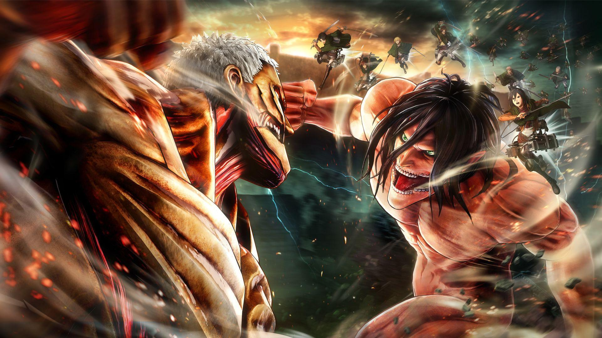
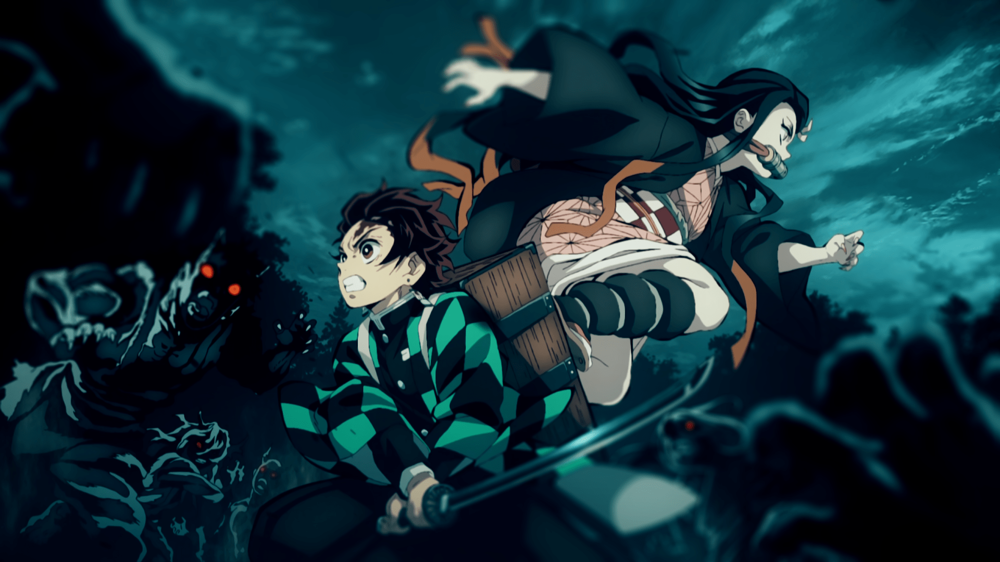

1. Attack on Titan
Attack on Titan tetap menjadi salah satu anime terpopuler di tahun 2024. Dengan animasi yang memukau dan alur cerita yang mendalam, anime ini berhasil menyentuh hati para penontonnya. Cerita berpusat pada perjuangan umat manusia melawan Titan, makhluk raksasa yang mengancam keberadaan mereka.
Musim terakhir yang dirilis tahun ini menjanjikan banyak kejutan dan pengungkapan yang telah dinanti-nantikan penggemar. Karakter-karakter seperti Eren Yeager dan Mikasa Ackerman terus menunjukkan perkembangan yang mengejutkan, menjadikan anime ini wajib tonton.
2. Demon Slayer: Swordsmith Village Arc
Demon Slayer tidak pernah kehilangan daya tariknya. Arc terbaru, Swordsmith Village Arc, memperkenalkan berbagai karakter baru dan memberikan lebih banyak latar belakang tentang para pembunuh iblis. Kualitas animasi yang sangat tinggi dan pertarungan yang intens membuat anime ini terus digemari.
Petualangan Tanjiro, Nezuko, dan teman-teman mereka di desa pembuat pedang menawarkan kisah yang penuh emosi dan aksi. Para penggemar sangat menantikan setiap episode yang dirilis!
3. My Hero Academia

My Hero Academia terus menarik perhatian dengan alur cerita yang kompleks dan karakter yang berkembang. Di tahun 2024, cerita memasuki fase baru dengan lebih banyak konflik antara pahlawan dan penjahat.
Fokus pada perjalanan Izuku Midoriya dan teman-temannya untuk menjadi pahlawan sejati memberikan inspirasi dan motivasi bagi para penonton. Dengan pertarungan yang epik dan pengembangan karakter yang mendalam, anime ini menjadi favorit di kalangan penggemar.
4. Jujutsu Kaisen
Jujutsu Kaisen terus bersinar dengan karakter-karakter yang kuat dan cerita yang menegangkan. Dengan musim kedua yang dirilis tahun ini, penggemar menyaksikan pertarungan melawan kutukan yang semakin intens.
Karakter utama, Yuji Itadori, bersama dengan teman-temannya, berjuang melawan kekuatan jahat yang mengancam dunia. Gaya animasi yang dinamis dan pertarungan yang mendebarkan menjadikan anime ini tak terlewatkan.
5. Vinland Saga

Vinland Saga kembali dengan musim kedua yang mengungkapkan kisah Viking yang mendebarkan. Menceritakan perjalanan Thorfinn dalam pencarian balas dendam dan penemuan jati diri, anime ini menawarkan narasi yang mendalam dan emosional.
Visual yang menakjubkan dan detail sejarah yang akurat membuat anime ini menarik untuk ditonton. Penggambaran karakter dan tema persahabatan, pengkhianatan, dan pengampunan menjadi inti dari cerita.
6. Tokyo Revengers
Tokyo Revengers memasuki tahun 2024 dengan kisah yang semakin rumit dan menarik. Dengan konsep perjalanan waktu, anime ini menghadirkan penggabungan antara aksi, drama, dan romansa.
Setiap keputusan yang diambil oleh Takemichi memiliki konsekuensi besar, dan penggemar sangat menantikan bagaimana ia akan mengubah masa depan. Plot yang menegangkan dan karakter yang mendalam membuat anime ini menjadi tontonan yang menyentuh.
7. Bleach: Thousand-Year Blood War
Bleach kembali dengan arc yang sangat ditunggu-tunggu, Thousand-Year Blood War. Anime ini membawa kembali karakter-karakter favorit dan memperkenalkan antagonis baru yang kuat.
Dengan aksi yang mendebarkan dan konflik yang kompleks, anime ini berhasil membangkitkan nostalgia sekaligus menawarkan pengalaman baru bagi penggemar. Kombinasi antara aksi yang menegangkan dan cerita yang mendalam menjadikan Bleach tetap relevan di tahun 2024.